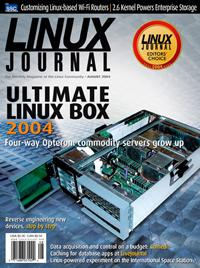

Shutdown Archive web server
Search:
Linux Journal
Issue #124/August 2004

Features
Ultimate Linux Box 2004
by Paul Bibaud, Jesse Keating, Cosmo King, Eric Logan, Micah Spacek, Tim Lee and Don Marti
We take a peek at a no-compromises system that will give everyone some PC construction ideas.
Linux on Linksys Wi-Fi Routers
by James Ewing
This sub-$100 wireless box has 16MB of RAM and a 125MHz processor. Put it to work.
Indepth
2004 Editors' Choice Awards
by LJ Staff
Our newly expanded team of experts comes to some surprising conclusions on the year's best products and projects.
Linux Serial Consoles for Servers and Clusters
by Matthew E. Hoskins
Keep your servers under control with one cable, not a rackload.
Distributed Caching with Memcached
by Brad Fitzpatrick
Speed up your database app with a simple, fast caching layer that uses your existing servers' spare memory.
Data Acquisition with Comedi
by Caleb Tennis
Whatever you're discovering or inventing, now you can use any data acquisition card with the same API.
Declic: Linux 2.6 on the International Space Station
by Taco Walstra
Linux fits into this new research program in several ways, from meeting real-time requirements with the 2.6 kernel to offering a prototyping platform for microcontroller code.
Embedded
Driving Me Nuts
by Greg Kroah-Hartman
Toolbox
At the Forge
Weblogs and Slash
by Reuven M. Lerner
Kernel Korner
Storage Improvements in 2.6 and for 2.7
by Paul E. McKenney
Cooking with Linux
The Ultimate Cooking Box
by Marcel Gagné
Columns
Linux for Suits
Missing Pieces
by Doc Searls
EOF
Open Source Is for Pigs
by Evan Leibovitch
Departments
From the Editor
Letters
upFRONT
On The Web
Best of Technical Support
New Products
Archive Index
Shutdown Archive web server
Search:
Copyright © 1994 - 2018
Linux Journal
. All rights reserved.